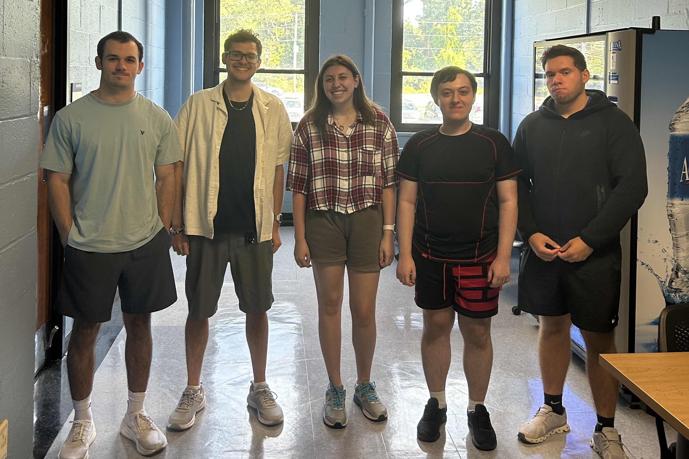

We are a passionate group dedicated to helping find the perfect mentor for you!
From left to right: Aidan, Tyler, Brianna, Erik and Andreas.
Aidan is our front-end developer, specializing in creating visually appealing and user-friendly interfaces. With a keen eye for design and a passion for user experience, Aidan ensures that every interaction on SkillLink is seamless and engaging.
Tyler is our back-end developer, responsible for building and maintaining the server-side logic and database management. With expertise in server architecture and data security, Tyler ensures that SkillLink runs smoothly and efficiently.
Brianna is our full-stack developer, bridging the gap between front-end and back-end development. With a versatile skill set, Brianna ensures that all components of SkillLink work together harmoniously to deliver a cohesive user experience.
Erik is our security specialist, dedicated to protecting user data and ensuring the integrity of our platform. With a deep understanding of cybersecurity best practices, Erik implements robust security measures to safeguard SkillLink against threats.
Andreas is our DevOps engineer, focusing on the deployment, scaling, and monitoring of SkillLink's infrastructure. With expertise in automation and cloud services, Andreas ensures that our platform remains reliable and performs optimally under varying loads.